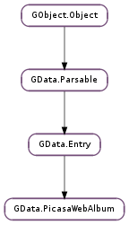

| static | new(id) |
| get_bytes_used() | |
| get_comment_count() | |
| get_contents() | |
| get_coordinates() | |
| get_edited() | |
| get_id() | |
| get_location() | |
| get_nickname() | |
| get_num_photos() | |
| get_num_photos_remaining() | |
| get_tags() | |
| get_thumbnails() | |
| get_timestamp() | |
| get_user() | |
| get_visibility() | |
| is_commenting_enabled() | |
| set_coordinates(latitude, longitude) | |
| set_is_commenting_enabled(is_commenting_enabled) | |
| set_location(location) | |
| set_tags(tags) | |
| set_timestamp(timestamp) | |
| set_visibility(visibility) |
| Name | Type | Flags | Description |
|---|---|---|---|
| album-id | str | r/w/c | The ID of the album. |
| bytes-used | r | The number of bytes consumed by this album and its contents. | |
| comment-count | int | r | The number of comments on the album. |
| edited | int | r | The time this album was last edited. |
| is-commenting-enabled | bool | r/w | Whether commenting is enabled for this album. |
| latitude | float | r/w | The location as a latitude coordinate associated with this album. |
| location | str | r/w | The user-specified location associated with the album. |
| longitude | float | r/w | The location as a longitude coordinate associated with this album. |
| nickname | str | r | The user’s nickname. |
| num-photos | int | r | The number of photos and videos in the album. |
| num-photos-remaining | int | r | The number of files spaces still free for uploads. |
| tags | list | r/w | A None-terminated array of tags associated with the album |
| timestamp | int | r/w | The timestamp of when the album occurred, settable by the user. |
| user | str | r | The username of the album owner. |
| visibility | GData.PicasaWebVisibility | r/w | The visibility (or access rights) of the album. |
None
| Name | Type | Access |
|---|---|---|
| parent | GData.Entry | r |
Bases: GData.Entry
All the fields in the GData.PicasaWebAlbum structure are private and should never be accessed directly.
| Parameters: | id (str or None) – the album’s entry ID, or None |
|---|---|
| Returns: | a new GData.PicasaWebAlbum, or None ; unref with GObject.Object.unref () |
| Return type: | GData.PicasaWebAlbum |
Creates a new GData.PicasaWebAlbum with the given ID and default properties. id is the ID which would be returned by GData.Entry.get_id (), not GData.PicasaWebAlbum.get_id ().
If id is not None and can’t be parsed to extract an album ID, None will be returned.
| Returns: | the number of bytes used by the album and its contents, or -1 |
|---|---|
| Return type: | int |
Gets the GData.PicasaWebAlbum :bytes-used property. It will return -1 if the current authenticated user is not the owner of the album.
| Returns: | the number of comments on the album |
|---|---|
| Return type: | int |
Gets the GData.PicasaWebAlbum :comment-count property.
| Returns: | a GLib.List of GData.MediaContent items |
|---|---|
| Return type: | [GData.MediaContent] |
Returns a list of media content, such as the cover image for the album.
| Return type: | latitude: float, longitude: float |
|---|
Gets the GData.PicasaWebAlbum :latitude and GData.PicasaWebAlbum :longitude properties, setting the out parameters to them. If either latitude or longitude is None, that parameter will not be set. If the coordinates are unset, latitude and longitude will be set to GObject.G_MAXDOUBLE.
| Returns: | the UNIX timestamp for the time the album was last edited, or -1 |
|---|---|
| Return type: | int |
Gets the GData.PicasaWebAlbum :edited property. If the property is unset, -1 will be returned.
| Returns: | the album’s ID |
|---|---|
| Return type: | str |
Gets the GData.PicasaWebAlbum :album-id property.
| Returns: | the album’s location, or None |
|---|---|
| Return type: | str |
Gets the GData.PicasaWebAlbum :location property.
| Returns: | the album owner’s nickname |
|---|---|
| Return type: | str |
Gets the GData.PicasaWebAlbum :nickname property.
| Returns: | the number of photos currently in the album |
|---|---|
| Return type: | int |
Gets the GData.PicasaWebAlbum :num-photos property.
| Returns: | the number of photos that can still be uploaded to the album |
|---|---|
| Return type: | int |
Gets the GData.PicasaWebAlbum :num-photos-remaining property.
| Returns: | a None-terminated array of tags associated with all the photos in the album, or None |
|---|---|
| Return type: | [str] |
Gets the GData.PicasaWebAlbum :tags property.
| Returns: | a GLib.List of GData.MediaThumbnail s, or None |
|---|---|
| Return type: | [GData.MediaThumbnail] |
Returns a list of thumbnails, often at different sizes, for this album.
| Returns: | the UNIX timestamp for the timestamp property in milliseconds, or -1 |
|---|---|
| Return type: | int |
Gets the GData.PicasaWebAlbum :timestamp property. This value usually holds either the date that best corresponds to the album of photos, or to the day it was uploaded. It’s a UNIX timestamp in milliseconds (not seconds) since the epoch. If the property is unset, -1 will be returned.
| Returns: | the album owner’s username |
|---|---|
| Return type: | str |
Gets the GData.PicasaWebAlbum :user property.
| Returns: | the album’s visibility level |
|---|---|
| Return type: | GData.PicasaWebVisibility |
Gets the GData.PicasaWebAlbum :visibility property.
| Returns: | True if commenting is enabled for the album, False otherwise |
|---|---|
| Return type: | bool |
Gets the GData.PicasaWebAlbum :is-commenting-enabled property.
| Parameters: |
|
|---|
Sets the GData.PicasaWebAlbum :latitude and GData.PicasaWebAlbum :longitude properties to latitude and longitude respectively.
| Parameters: | is_commenting_enabled (bool) – True if commenting should be enabled for the album, False otherwise |
|---|
Sets the GData.PicasaWebAlbum :is-commenting-enabled property to is_commenting_enabled.
| Parameters: | location (str or None) – the new album location, or None |
|---|
Sets the GData.PicasaWebAlbum :location property to location.
Set location to None to unset the property.
| Parameters: | tags ([str] or None) – the new None-terminated array of tags, or None |
|---|
Sets the GData.PicasaWebAlbum :tags property to tags.
Set tags to None to unset the album’s tag list.
| Parameters: | timestamp (int) – a UNIX timestamp, or -1 |
|---|
Sets the GData.PicasaWebAlbum :timestamp property from timestamp. This should be a UNIX timestamp in milliseconds (not seconds) since the epoch.
Set timestamp to -1 to unset the property.
| Parameters: | visibility (GData.PicasaWebVisibility) – the new album visibility level |
|---|
Sets the GData.PicasaWebAlbum :visibility property to visibility.